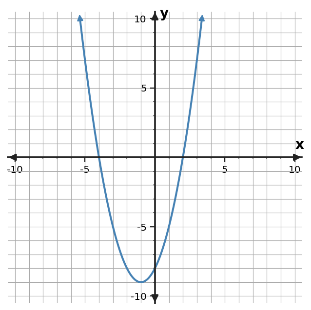
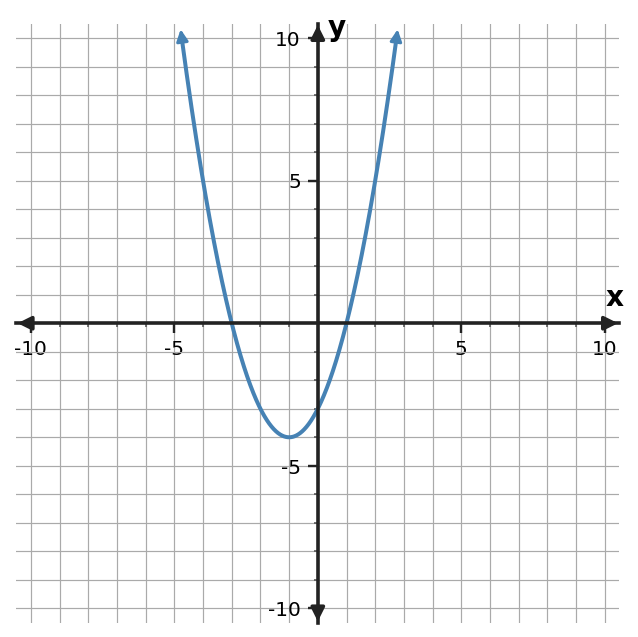
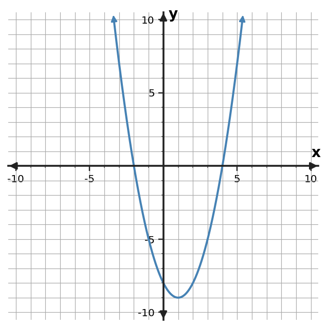

Learning Target
Students will solve quadratic equations using factored form and interpret solutions.
- I can construct factored quadratic equations from given zeros, intercepts, or contextual constraints.
- I can apply the zero product property to solve quadratic equations in factored form.
- I can determine whether solutions make sense in relation to a graph or context.
Vocabulary / Key Notation Preview
quadratic equation · factored form · zero product property · zero · solution
Sort the vocabulary. Put each term where it belongs based on what you know before reading.
| Know for sure | Recognize | Don't know yet |
|---|---|---|
What's to Come
DO NOT SOLVE IT YET.
Circle anything familiar, underline symbols, labels, conditions, data, or features that seem important, and write short notes about what you think may matter later.
A parabola is shown below. The same relationship can be written as $y=(x-2)(x+4)$.

- Estimate the two $x$-intercepts from the graph.
- What values of $x$ make $(x-2)(x+4)=0$?
- Explain why the answers to the first two parts should match.
Teaching note: Listen for students noticing that graph x-intercepts and factors becoming zero are describing the same inputs. Do not name the zero product property yet.
Let's Get Started
Skim the section. Record what catches your attention before you read closely.
| What I noticed | |
|---|---|
| What I predict | |
| What I wonder |
CLOSE-READ AND ANNOTATE
Read in short chunks. Mark the first-use vocabulary, connect sentences to equations/tables/graphs, label important features, and jot a question or connection when something changes your thinking.
I Can 1: I can construct factored quadratic equations from given zeros, intercepts, or contextual constraints.
A quadratic in factored form shows multiplication explicitly. If a graph has zeros at $x=r_1$ and $x=r_2$, then factors that become zero at those inputs are $(x-r_1)$ and $(x-r_2)$. That makes $y=a(x-r_1)(x-r_2)$ a natural way to build a quadratic from its zeros.
The number $a$ controls the vertical scale and the direction of opening. The zeros alone tell us where the graph meets the $x$-axis, but they do not determine a unique quadratic unless we also know $a$ or another point. When a problem says the leading coefficient is 1, we can use $a=1$ immediately.
Tables and graphs can reveal the same information. A row with $y=0$ identifies a zero, and a graph crossing or touching the $x$-axis identifies an $x$-intercept. Once those zeros are known, we can translate them back into factors and build a matching equation.
- If a zero is $x=3$, which factor becomes zero there?
- Why do two zeros usually determine the factors but not the vertical scale of a quadratic?
- How can a table help you build a factored equation?
Teacher answer: 1) The factor is $(x-3)$. 2) Zeros determine where factors vanish, but a nonzero scale factor $a$ can change the graph without changing the zeros. 3) Locate rows where $y=0$, convert those x-values to factors, and use any additional information to determine $a$.
If $x=r$ is a zero, then $(x-r)$ is a factor.
| Zero | Matching factor |
|---|---|
| $x=3$ | $(x-3)$ |
| $x=-4$ | $(x+4)$ |
Two zeros $r_1,r_2$ lead to $y=a(x-r_1)(x-r_2)$.
Example 1: Build from zeros
Write a quadratic equation in factored form whose solutions are $x=3$ and $x=-6$.
Teacher answer: A matching equation is $(x-3)(x+6)=0$.
Discourse Moves
Teacher Moves
- Ask students to connect each zero to a factor before naming an equation.
- Press for what the scale factor $a$ changes and what it does not change.
- Compare table-zero evidence with factor notation.
Student Moves
- Explain how a zero becomes a factor.
- Compare two possible equations that share the same zeros.
- Use table evidence to justify a factored model.
You Try It 1: Build from zeros
Write a quadratic equation in factored form whose solutions are $x=-2$ and $x=8$.
Teacher answer: $(x+2)(x-8)=0$.
Example 2: Build from table zeros
The table comes from a quadratic function.
| $x$ | $y$ |
|---|---|
| $-2$ | $0$ |
| $-1$ | $-4$ |
| $0$ | $-6$ |
| $2$ | $-4$ |
| $3$ | $0$ |
Use the table to identify the zeros and write a possible factored equation with leading coefficient 1.
Teacher answer: Zeros: $-2$ and $3$. A possible equation is $y=(x+2)(x-3)$.
You Try It 2: Build from table zeros
Use the table to identify the zeros and write a possible factored equation with leading coefficient 1.
| $x$ | $y$ |
|---|---|
| $-4$ | $0$ |
| $-3$ | $-5$ |
| $-2$ | $-8$ |
| $0$ | $-8$ |
| $2$ | $0$ |
Teacher answer: Zeros: $-4$ and $2$. A possible equation is $y=(x+4)(x-2)$.
I Can 2: I can apply the zero product property to solve quadratic equations in factored form.
The zero product property says that if a product equals zero, then at least one factor must equal zero. For example, if $(x-5)(x+2)=0$, then either $x-5=0$ or $x+2=0$. Solving those two simpler equations gives the solutions of the original quadratic equation.
The condition “equals zero” matters. If a quadratic equation is not already set equal to zero, the zero product property does not apply yet. First rewrite the equation so one side is zero, then factor, and only then set each factor equal to zero.
A common error is to stop at the factor values. From $x-5=0$, the solution is $x=5$, not $-5$. Each factor equation still has to be solved for the variable. A quick substitution check or graph check can confirm that the final values really make the original expression zero.
- What must be true before the zero product property can be used?
- After setting a factor equal to zero, what still has to happen?
- Why is factoring useful for solving a quadratic rather than multiplying the factors back out?
Teacher answer: 1) The equation must be written as a product equal to zero. 2) Solve the resulting linear factor equation for the variable. 3) Factoring turns one quadratic equation into simpler linear equations whose zero values are easy to isolate.
Use this order:
- Rewrite the equation so one side is $0$.
- Factor the quadratic expression.
- Set each factor equal to $0$ and solve.
Example structure: $(x-r_1)(x-r_2)=0$ gives $x=r_1$ or $x=r_2$.
Example 3: Use the zero product property
Solve $(x-5)(x+2)=0$.
Teacher answer: By the zero product property, $x-5=0$ or $x+2=0$, so $x=5,-2$.
Discourse Moves
Teacher Moves
- Wait after asking why the product must equal zero.
- Revoice a solution as two linear factor equations.
- Probe for a substitution or graph check.
Student Moves
- State the condition for zero product.
- Solve and explain each factor equation.
- Check a root against the original product.
You Try It 3: Use the zero product property
Solve $(x+4)(x-7)=0$.
Teacher answer: $x=-4,7$.
I Can 3: I can determine whether solutions make sense in relation to a graph or context.
A solution to a quadratic equation is an input that makes the equation true. On a graph of $y=f(x)$, the solutions of $f(x)=0$ appear where the graph meets the $x$-axis. That is why algebraic zeros and graphical $x$-intercepts describe the same inputs.
Not every zero looks the same on a graph. When a factor is repeated, such as $(x+4)^2$, the same solution occurs twice algebraically. The parabola touches the $x$-axis at that input and turns around instead of crossing through it.
Context adds another layer. Algebra may produce two valid numerical solutions, but the situation may restrict which ones are meaningful. Time may need to be nonnegative, a length may need to be positive, or a model may only be valid on a stated interval. A complete solution therefore includes both the mathematics and an interpretation of which values fit the situation.
- What graph feature represents a solution of $f(x)=0$?
- How does a repeated solution look different from two distinct solutions on a graph?
- Why can an algebraically correct solution still be rejected in a context?
Teacher answer: 1) An $x$-intercept. 2) A repeated root touches the axis and turns; distinct roots normally correspond to separate intercepts/crossings. 3) The model's domain, units, or physical restrictions may exclude an algebraic value.
| Equation | Graph | Context |
|---|---|---|
| $f(r)=0$ | $(r,0)$ is an $x$-intercept | $r$ must also fit the model's domain and meaning |
Example 4: Read zeros from a graph
Use the graph to solve $f(x)=0$.

Teacher answer: $x=-3,1$.
Discourse Moves
Teacher Moves
- Ask what the graph is doing at each root.
- Invite comparison of crossing versus touching the axis.
- Press for a context/domain reason to keep or reject a root.
Student Moves
- Connect roots to $x$-intercepts.
- Explain a repeated root graphically.
- Defend whether a solution is meaningful in context.
You Try It 4: Read zeros from a graph
Use the graph to solve $g(x)=0$.

Teacher answer: $x=-2,4$.
Example 5: Interpret contextual solutions
A rectangle has side lengths $x+2$ and $x-5$. Its area is 0. Solve $(x+2)(x-5)=0$ and state which value can represent a side-length boundary.
Teacher answer: The algebraic solutions are $x=-2,5$. If side lengths must be nonnegative, $x=5$ is the meaningful boundary for $x-5$; $x=-2$ makes the other factor zero but is not a positive length setting.
You Try It 5: Interpret contextual solutions
A product model is $(x-1)(x+7)=0$. Solve and identify which solution is nonnegative.
Teacher answer: The solutions are $x=1,-7$; the nonnegative solution is $x=1$.
Example 6: Interpret a repeated solution
Solve $(x+4)^2=0$ and describe what the repeated solution means on the graph.
Teacher answer: $x=-4$ is a repeated solution. The parabola touches the $x$-axis at $(-4,0)$ rather than crossing it.
You Try It 6: Interpret a repeated solution
Solve $(x-3)^2=0$ and describe the graph at the solution.
Teacher answer: $x=3$ is repeated; the parabola touches the $x$-axis at $(3,0)$.
Summary
- Zeros determine factors: $x=r$ corresponds to $(x-r)$.
- Use the zero product property only after a product is set equal to zero.
- Solutions of $f(x)=0$ match graph $x$-intercepts.
- Repeated roots touch the axis; context decides which algebraic solutions are meaningful.
Common Mistakes
| Watch for | Better check |
|---|---|
| Using the zero product property before the equation equals zero. | What should I check instead? |
| Reading $(x-r)=0$ as $x=-r$ instead of $x=r$. | What should I check instead? |
| Assuming zeros alone determine the leading coefficient. | What should I check instead? |
| Reporting every algebraic root without checking the context or domain. | What should I check instead? |